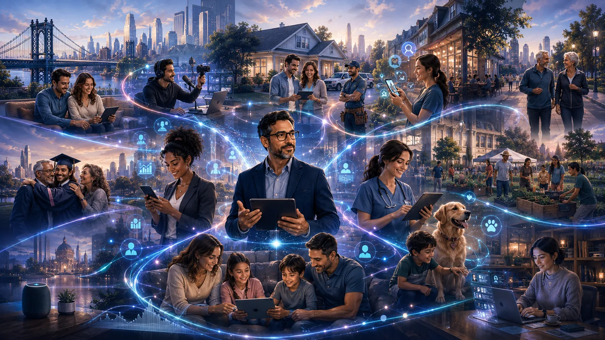
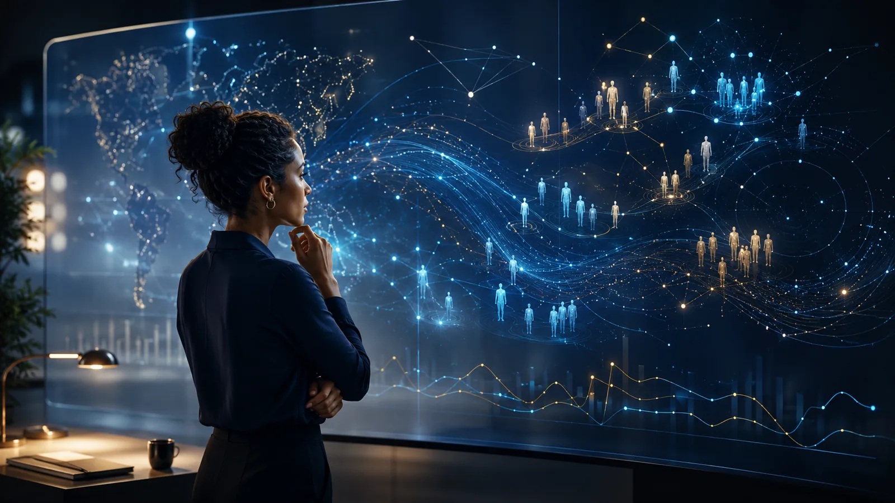

One ecosystem. Multiple moments. One learning layer.
Properties create discovery. Talent builds trust. Guides make the journey human. Loop turns behavior into intelligence.
Discovery, trust, guidance, intelligence.
The ecosystem is not a stack of disconnected marketing services. Each layer supports the next: owned properties meet intent, guides create continuity, Talent builds attention, and Loop converts behavior into reusable intelligence.
Different channels. One ecosystem. Every channel feeds the Loop.
A search can become a guide interaction. A guide interaction can become a call. A creator can introduce the property that earns the search. Loop connects those actions so the next decision is informed by the last one.

People do not experience their lives in marketing departments.
They move from questions to recommendations, from content to conversations, and from trust to action—often across several channels in the same decision.
EMG connects those channels rather than forcing them into separate plans. Owned media captures the question. AI guides organize the decision. Creators make the information human. Performance connects people to providers. Loop preserves the signals so every layer can improve.
That connection is the ecosystem. Each capability remains useful on its own, but its value grows when the journey is understood as a whole.

The ecosystem becomes more valuable when every interaction leaves the next experience better informed.
A connected system should do more than move people between channels. It should preserve what those channels reveal about the decision.
Searches expose language. Content exposes questions. Calls expose urgency. Creator engagement exposes trust. Outcomes expose whether the promise held up. EMG brings those signals together so the network can improve as a whole.
That is the difference between a collection of media assets and an intelligence ecosystem: one publishes; the other learns.
You don’t need every layer on day one.
Start with the problem in front of you. The ecosystem creates room for the work to become more connected over time.